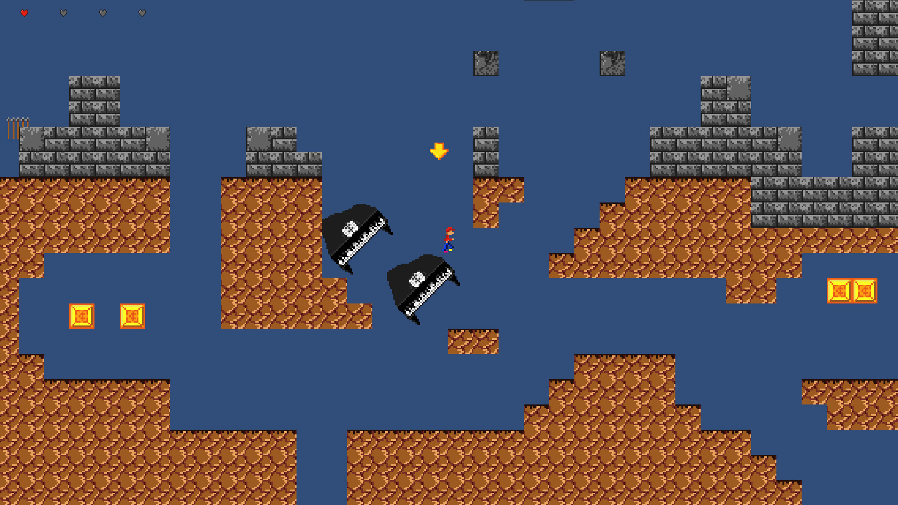
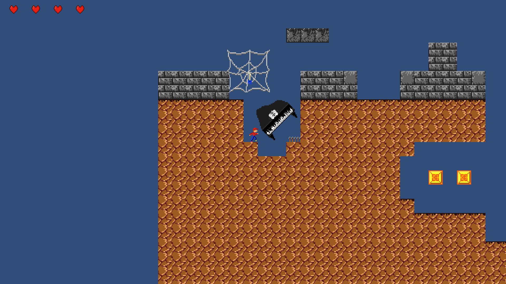

Description
OCD and run was created during the Global Game Jam 2016 with the theme "Rituals". It is a 2d Sidescroller that remembers your last inputs. Random events happen (e.g. a piano falling on the player) and the last 3 inputs of the player are saved to that event. Everytime the player repeats that ritual the same event is triggered again.
Links
Project scope
2 days, 2016
Team size
5

